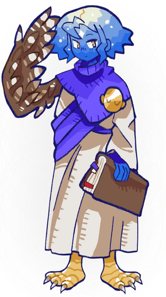

MUITA GENTE SENTE QUE ESCOLHEU NO QUE ACREDITA
Mas, antes mesmo de ter idade para decidir, quase todo mundo já recebeu uma forma de ver o mundo.
CONTINUE A LEITURA
Vivemos em uma era de excesso de informação e pouca reflexão.
Nosso objetivo é criar um espaço onde perguntas são mais importantes
do que respostas prontas.
Mas, antes mesmo de ter idade para decidir, quase todo mundo já recebeu uma forma de ver o mundo.
CONTINUE A LEITURAO lugar onde nascemos influencia nossa cultura, nossos costumes e nossa forma de pensar.
CONTINUE A LEITURAAcreditar em algo com muita certeza não significa necessariamente que aquilo seja verdadeiro.
CONTINUE A LEITURAGnosIA é uma assistente virtual direcionada ao ensino de sociologia e filosofia para todos os alunos do Brasil.
EXPERIMENTE NOSSA ASSISTENTE!
Somos estudantes da Escola Técnica Estadual Porto Digital, cursamos Desenvolvimento de Sistemas atualmente estamos realizando um projeto que visa aprimorar nossas capacidades envolvendo programação, design, documentações e etc
Após reuniões em grupo, identificamos o problema da desinformação em relação a ideologias, religiões e Ideais. Consideramos que esse conhecimento é muito importante para a convivência em comunidade e resolvemos ajudar na solução desse problema
Nossa Proposta e Funcionalidade: Combatendo a escassez de reflexão no mundo moderno. A assistente orienta os usuários a questionarem e compreenderem melhor a filosofia e a sociedade contemporânea.